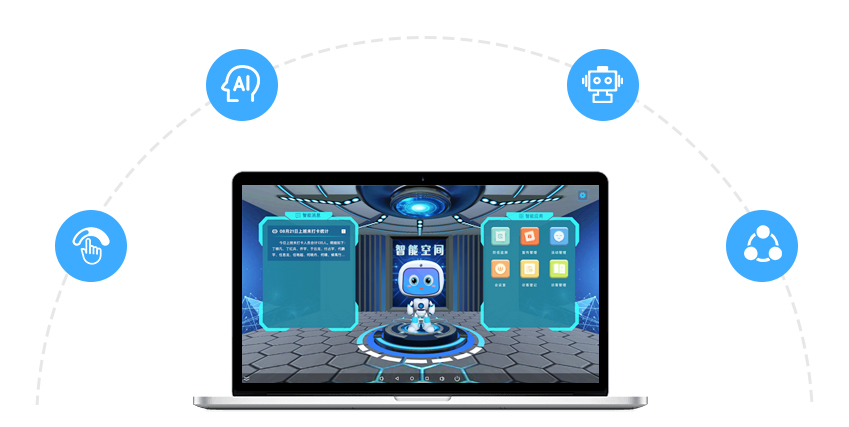

功能特点
任务助手
为组织管理配备智能语音任务助手，使任务的整个流程操作更加便捷。
日历任务
提供更为高效的时间任务管理。
OKR体系
以任务目标为核心，融入工作任务执行体系（OKR），管理更加高效。
任务视图
多种模式的任务展示视图，用户可随意定制切换，直观展示任务信息。
智能化应用场景


使用价值

智能AI技术赋能企业经营，管理更加智能、高效，促进企业精细化管控。
通过语音AI交互方式，简化操作界面及流程，有效的解决系统多、界面复杂性问题，提升工作执行效率。
通过人工智能技术使机器人具有语音提醒、预警能力，大大提升工作效率，推动企业高效运营。
任务流程全生命周期智能管理，使工作流程变得更加灵活、便捷，有效降低企业运营成本。